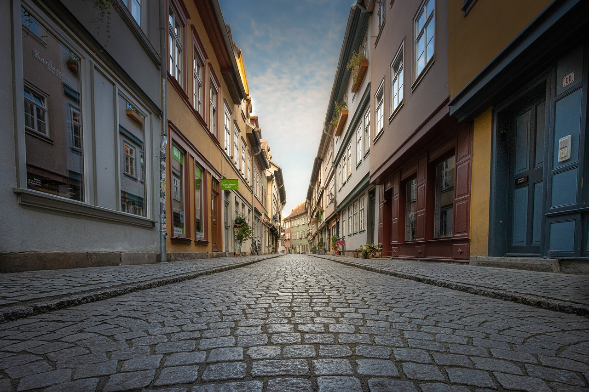
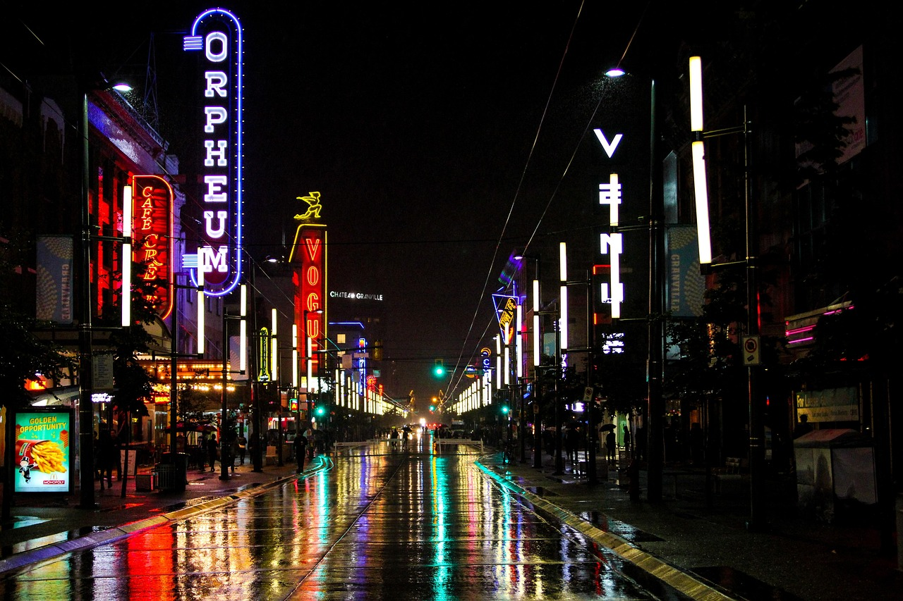
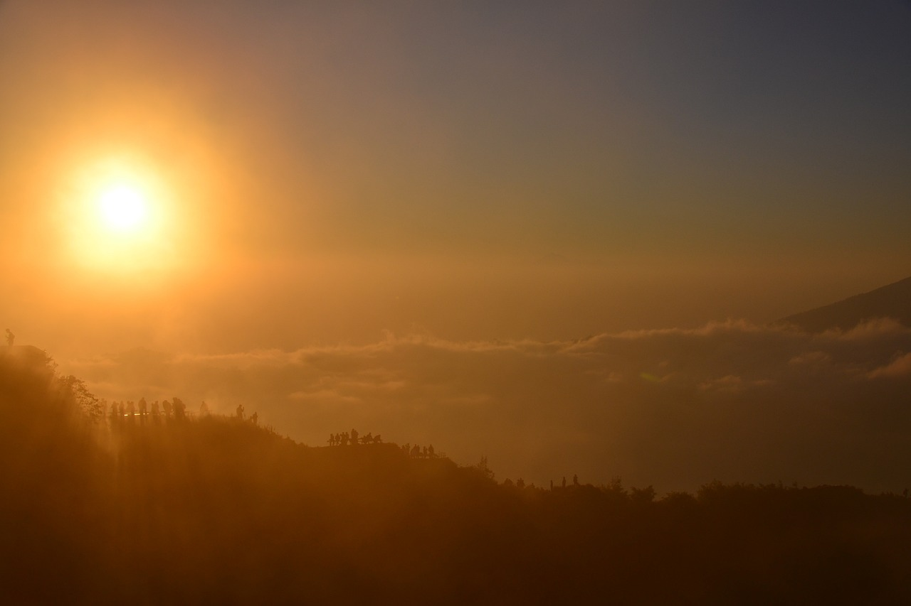

Getting Lost in Rome

Source: Cobblestone Street City Europe
One of my most unexpected travel experiences was getting lost in the narrow streets of Rome.
What started as a frustrating detour turned into a magical experience when I stumbled upon
a quiet, hidden café with the best espresso I've ever had.
After chatting with the barista, I learned about a nearby art gallery that few tourists visit.
It became one of my favorite memories of the trip—sometimes, getting lost is the best way to explore!
A Rainy Day in Bangkok

Source: Granville Street Vancouver Canada
During my trip to Bangkok, a sudden downpour forced me to change my plans. Instead of visiting temples,
I explored indoor markets and tried new street food, making for one of the most memorable and delicious
days of my trip.
I discovered a tiny stall selling Mango Sticky Rice, a dessert that quickly became
my favorite. The unexpected change in plans led me to experience Bangkok like a local!
Sunrise in Bali

Source: Bali Mount Batur Mountain Volcano
Bali is famous for its breathtaking sunrises. One morning, I woke up at 4 AM to hike Mount Batur,
an active volcano. The climb was tough, but reaching the top just in time to see the sun rise over the
island was an unforgettable moment.
As I sipped on warm tea at the peak, I realized how incredible it feels to step outside my comfort zone.
Pro Tip: Bring a flashlight and a jacket—it gets chilly at the top!